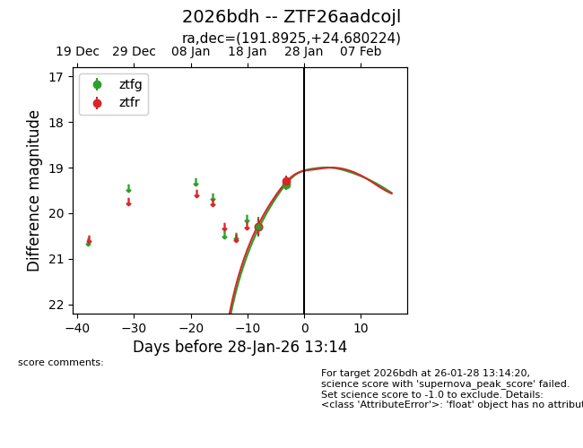
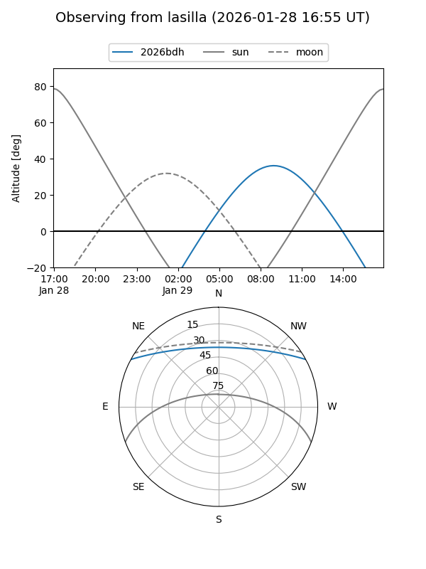
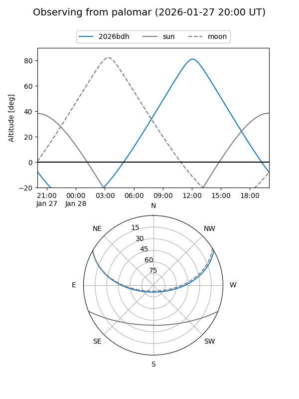

2026bdh
Target 2026bdh at 2026-01-27 17:56
Aliases and brokers:
FINK: link
Lasair: link
ALeRCE: link
TNS: link
YSE: link
alt names
ZTF26aadcojl (ztf,fink_ztf)
2026bdh (tns,yse)
Coordinates:
equatorial (ra, dec) = 191.8925,+24.68022
equatorial (HMS+DMS) = 12:47:34.20,+24:40:48.81
galactic (l, b) = (283.1582,+87.40208)
Flags:
Photometry:
last ztfg=19.37, ztfr=19.29
2 ztfg, 1 ztfr detections
Lightcurve

Visibility


Additional plots